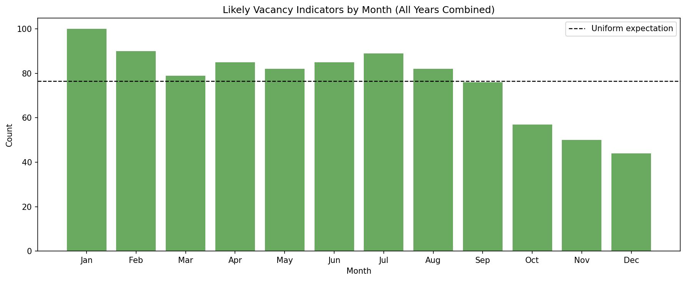

| Metric | Value | Basis | |
|---|---|---|---|
| 0 | 311 records in notebook checkpoint | 1,545,157 | 311 notebook output |
| 1 | Board-up + abandoned calls | 1,574 | Recomputed from notebook checkpoint |
| 2 | Unique address strings | 1,282 | Recomputed from notebook checkpoint |
| 3 | Board-up calls | 919 | Recomputed from notebook checkpoint |
| 4 | Abandoned calls | 655 | Recomputed from notebook checkpoint |
| 5 | Vacant or underused parcels | 28,670 | March 17 support comment |
| 6 | Assessed land value of those parcels | $5.1 billion | March 17 support comment |
Vacant Lot Tax Support
Methods, results, discussion, and conclusion from Sacramento 311 indicators
This report reorganizes the March 17 support comment into a methods/results/discussion/conclusion format. It uses outputs created by hackathon_data/311_analysis.ipynb, especially the joined checkpoint at hackathon_data/311_analysis_outputs/step6_full_joined_checkpoint.gpkg and the exported HTML maps.
Methods
The analysis is built from the 311_analysis.ipynb workflow. That notebook produced a joined 311 checkpoint with parcel-use context, ZIP codes, addresses, and the exported maps shown below. For this report, the main vacancy-related signal follows the March 17 comment: it combines Housing - Boardup complaints with records whose CategoryLevel2 is Abandoned.
The analytical steps are intentionally simple:
- Start with the notebook checkpoint containing 1.5 million-plus 311 records.
- Filter to board-up and abandoned records to create a likely-vacancy indicator set.
- Summarize those calls by ZIP code, street corridor, month, and parcel-use category.
- Use address strings for the unique-address count so cross-street style complaints are not collapsed too aggressively.
- Pair the 311 findings with the separate parcel review described in the March 17 comment.
One practical note: because 311_analysis.ipynb was explored interactively, this report rebuilds the summary counts from the saved checkpoint instead of depending on every downstream CSV export.
Results
The main pattern is concentration, not even spread. The filtered calls cluster in a limited set of ZIP codes, with 95815 and 95838 clearly leading and 95814 remaining part of the central-city pattern highlighted in the March 17 comment.
Interactive notebook output: ZIP-level annual-average choropleth exported by 311_analysis.ipynb.
Street-level clustering tells the same story. The heaviest corridors are Broadway, J Street, Freeport Boulevard, Del Paso Boulevard, Stockton Boulevard, and Florin Road, which matches the qualitative emphasis in the March 17 comment.
The notebook’s saved seasonality plot also supports the idea that these complaints recur throughout the year rather than appearing as a one-off burst.

311_analysis.ipynb.Finally, the map below is useful for showing that boarded-up and abandoned conditions do not appear in isolation. The abandoned-point layer sits on top of a much broader heatmap of blight-related complaints, making the surrounding neighborhood context visible.
Interactive notebook output: abandoned-property points overlaid on a blight heatmap.
Discussion
The policy significance is not just that Sacramento has a vacancy signal in the 311 data. It is that the signal is spatially concentrated, persistent, and clearly connected to places where people already experience visible neglect. A complaint-driven system can document those harms and help staff respond, but it works after the fact. It does not change the holding incentive that keeps land idle.
The parcel-use mix also matters. The 311 signal is not confined to one land-use type. Residential parcels are the largest group in the joined data, commercial parcels are also substantial, and a smaller share maps directly to vacant land or institutional uses. That supports the March 17 comment’s broader argument that the costs of long-term vacancy spill across housing areas, business corridors, and shared neighborhood space.
Important
Enhanced enforcement is a foundation, not a substitute for incentive change. The March 17 memo’s core policy claim follows directly from the evidence above: documenting vacancy is useful, but making long-term land banking more expensive is what changes behavior.
The separate parcel review referenced in the March 17 support comment pushes the argument further. Roughly 28,670 vacant or underused parcels with about $5.1 billion in assessed land value is too large a stock of idle land to treat as a marginal issue. A flat fee may help with registration, but it is unlikely to be large enough to alter redevelopment timing or speculative holding decisions.
Conclusion
Taken together, the notebook outputs and the March 17 support comment point in the same direction. Sacramento’s vacancy-related complaints are concentrated in identifiable ZIP codes and corridors, they overlap with broader blight patterns, and they affect both residential and commercial environments. The implication is straightforward: stronger monitoring and enforcement should move forward, but the city should also build toward a vacant lot tax that is scaled to matter.
If the city wants that policy to work well, it should keep improving the data infrastructure around parcel size, ownership, use type, and vacancy duration. Better data will sharpen targeting, but the central policy logic is already visible in the current evidence: leaving land idle needs to become more costly than putting it back into use.